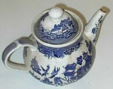

Lé thée est eune sîmpl'ye bouaisson grée atout dé ieau bouoillante et des fielles stchies. Y'a un tas d'difféthents thées grées atout des difféthentes hèrbes et mêmes des flieurs, mais l'pus populaithe est l'thée tchi veint du bîsson Camellia sinensis - la pliante à thée. Auprès l'ieau ch'est chein qu'nou bait l'pus dans l'monde.
Lé thée fut dêcouvèrt et tchultivé pouor c'menchi en Chinne, épis exporté partout l'monde. Auprès l'Âsie, l'Ûrope èrchut l'thée au seizième siècl'ye. Les Britanniques tch'aimaient tant baithe du thée, pliantîtent des pliantes dé thée en Înde pouor faithe la compétition d'auve les Chinnouais.
Not' mot thée veint d'la langue Min' pâlée ès côtes d'la Chinne du Su'êt'. Chu nom fut apporté en Ûrope par des marchands Hollandais épis pâssé dans bein d'langues Ûropéennes.
Y'a eune légende qu'un mouaine Buddhiste haûtait au run d'méditer, et c'copit les paûpiéthes à seule fîn dé s'garder êvilyi. Les paûpiéthes copées par têrre y gèrmîtent et d'vîntent eune pliante dé tchi les fielles 'taient capabl'yes dé renforchi la vil'lie des mouaines à lus méditâtion.
Pus probabliément lé thée a 'té bu pouor des milles ans coumme d'la méd'cinne - et nou r'quémande acouo au jour d'aniet l'vèrt thée pouor les beinfaits à la santé.
Lé nièr thée est l'rêsultat d'eune fèrmentâtion des fielles d'vant la séqu'thie tch'arrête la fèrment'tie. V'là tchi prêsèrve lé thée, et l'nièr thée a don 'té un objet d'conmèrce d'pis les touos vièrs temps viyant qu'lé goût enduthait les longs viages en mé ou l'travèrs des pays au liain.
Dans des pays nou-s'aime mus baithe du thée auve du lait, et dans d'aut's ch'est auve du limon. Lé thée est étout mêlé auve des flieurs, des frits, ou d's êpices pouor amender l'goût. Lé thée au jasmîn, l'thée à la menthe, ou l'thée à la bèrgamote, sont bein connus.
Viyiz étout: